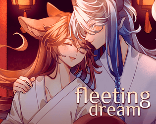
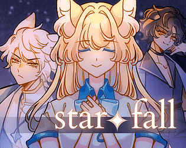
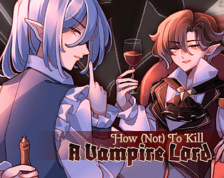
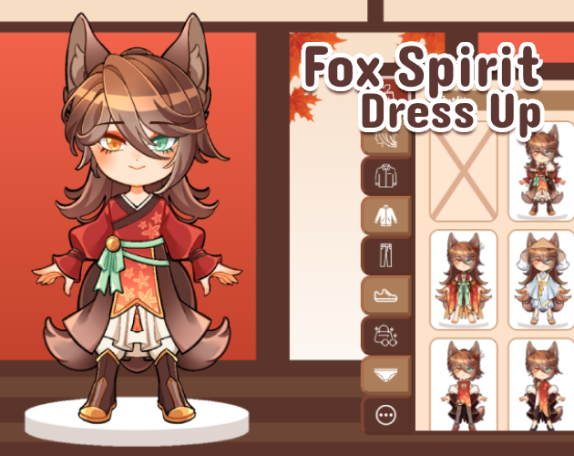

home
A directory of all the games I have made as a solo dev (mostly
visual novels).

Fleeting Dream
Released:
15-07-2026
The Dragon Emperor has recently taken a male fox spirit as his
lover. Qiu Ye is affectionate, considerate and obedient —
everything he could ask for in a partner. Yet their domestic
bliss is threatened when Qiu Ye becomes plagued by strange
nightmares.

Star Fall
Released:
01-04-2026
Andromeda is an ordinary girl going to an ordinary high school
in the ordinary small town of Star Fall. Her life changes
forever when she encounters a pair of mysterious brothers with
strange powers — the pragmatic and stoic Pollux, and the
charming but diabolical Castor.

How (Not) To Kill A Vampire Lord
Released:
25-01-2026
Vampire butler Cyrus is fed up with the antics of Mikael von
Dietrich, the noble vampire lord that he serves, and he is
determined to do whatever it takes to kill him. Will his plan
backfire or will he finally be free from the clutches of his
evil (and not handsome at all) master?

Fox Spirit Dress Up
Released:
30-12-2025
This is a silly little dress up game featuring my original
character, Qiu Ye, who is a nine-tailed fox spirit. It is mostly
meant to showcase his various outfits. All art assets are drawn
by me.